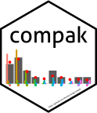

compak 
The compak package provided a discrete associated kernel smoother for estimating probability mass functions using the mean-parametrised Conway-Maxwell-Poisson (COMP) distribution of Huang (2017). Two automated bandwidth selection approaches, one based on minimizing Kullback-Leidler divergence and another based on cross-validation, are also implemented.
Installation
Stable release on CRAN
compak is not available on CRAN yet.
Development version on Github
You can use the devtools package to install the development version of compak from GitHub:
# install.packages("devtools")
devtools::install_github("thomas-fung/compak")
library(compak)
Citation
If you use this package to analyse your data, please use the following citation:
- Sippel, L., Fung, T. and Huang, A. (2020). compak: Conway-Maxwell-Poisson associated kernel. R package version 0.0.0.9000.
From R you can use: